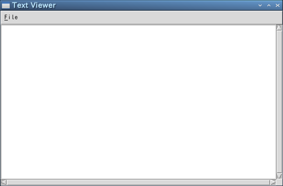
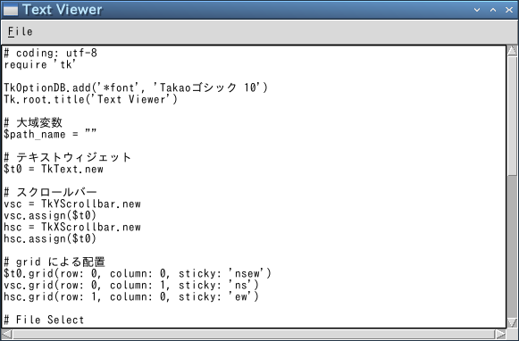
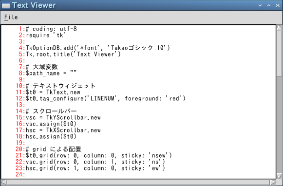
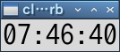
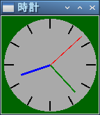
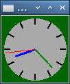
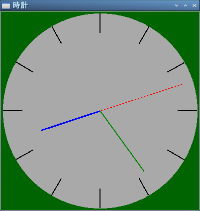

テキストウィジェット
いよいよ巨大なウィジェットである「テキストウィジェット」を説明します。エントリーウィジェットがラインエディタとするならば、テキストウィジェットはスクリーンエディタに相当し、柔軟で高度なテキスト編集を行うことができます。
●テキストウィジェットの生成
テキストウィジェットは TkText.new で生成します。テキストウィジェットには標準動作が用意されていて、それだけでテキスト編集が可能になっています。マウスの操作は、左クリックでカーソル位置の変更、ドラッグで範囲の選択、ダブルクリックで単語の選択が行えます。また、トリプルクリックで行の選択、ドラッグで文字列の選択ができます。カーソルなどのキー操作は、おおむね Emacs と同じなので、xyzzy や Emacs ユーザーには馴染みやすいでしょう。
テキストウィジェットの場合、オプション width と height は桁数と行数を表します。使用するフォントによってウィンドウのサイズが変わることに注意してください。また、オプション state に disabled を設定すると、テキストの変更を禁止することができます。これはキーボートからの入力だけでなく、プログラムによる挿入や削除も禁止されるので、必要なテキストデータをウィジェットに挿入してから、state を disabled に設定してください。
それから、オプション wrap で行の折り畳みを設定することができます。none を指定すると折り畳みは行われません。char は文字の切れ目で、word は単語の切れ目で折り畳みます。
●位置の指定
テキストウィジェットはリストボックスと同様に、スクロールバーと組み合わせて表示範囲を変更することができます。スクロールバー付きのテキストウィジェットは TkXScrollbar, TkYScrollbar を使うと簡単です。このほかにも、文字列の挿入、削除、検索といった、テキストエディタとして必要なメソッドが多数用意されています。詳細は Tcl/Tk や Ruby/Tk のマニュアルを参照してください。また、多くのメソッドで位置の指定が必要になります。基本的な指定方法を表に示します。
表：位置の基本指定
| N.M | N 行の M 文字目 |
| @x,y | テキスト内の (x,y) の位置にある文字 |
| end | テキスト末尾 |
| マーク名 | その名前のマークをつけた位置 |
| タグ名.first | その名前のタグの最初の位置 |
| タグ名.last | その名前のタグの最後の位置 |
マークとタグについてはあとで詳しく説明します。テキストウィジェットでは、行は 1 から数えますが、文字は 0 から数えるので注意してください。この基本指定に加えて、次に示す相対指定を組み合わせることができます。
表：位置の相対指定
| +Nchars, -Nchars | そこから N 文字先、手前 |
| +Nlines, -Nlines | そこから N 行先、手前 |
| linestart, lineend | その行の先頭、末尾 |
| wordstart, wordend | その単語の先頭、末尾 |
●テキストファイルを表示する
テキストウィジェットは多機能なので、ほかのウィジェットに比べて使いこなすのはちょっと難しいと思います。ですが、テキストを表示するだけならば、とても簡単にプログラムすることができます。まず最初に、テキストファイルを表示するプログラムを作ってみましょう。次のリストを見てください。
リスト：テキストファイルを表示する
# coding: utf-8
require 'tk'
TkOptionDB.add('*font', 'Takaoゴシック 10')
Tk.root.title('Text Viewer')
# 大域変数
$path_name = ""
# テキストウィジェット
$t0 = TkText.new
# スクロールバー
vsc = TkYScrollbar.new
vsc.assign($t0)
hsc = TkXScrollbar.new
hsc.assign($t0)
# grid による配置
$t0.grid(row: 0, column: 0, sticky: 'nsew')
vsc.grid(row: 0, column: 1, sticky: 'ns')
hsc.grid(row: 1, column: 0, sticky: 'ew')
# File Select
def load_file()
filename = Tk.getOpenFile(filetypes: "{{Text Files} {.txt .rb}}",
initialdir: $path_name)
if filename != ""
$path_name = File::dirname(filename)
fi = open(filename, "r")
$t0.delete('1.0', 'end')
for x in fi
$t0.insert('end', x)
end
fi.close()
$t0.focus
end
end
# Menu
m0 = TkMenu.new
Tk.root.configure(menu: m0)
m1 = TkMenu.new(m0, tearoff: false)
m1.add_command(label: 'Open', under: 0, command: proc { load_file })
m1.add_separator
m1.add_command(label: 'Exit', under: 0, command: proc { exit })
m0.add_cascade(label: 'File', under: 0, menu: m1)
Tk.mainloop
メニューの設定とファイルの選択は イメージとファイルの選択 で作成した画像ローダーと同じです。テキストウィジェットの生成は TkText.new で、スクロールバーは TkXScrollbar.new, TkYScrollbarScroller.new で生成します。スクロールバーの設定は拙作のページ リストボックスとスクロールバー の 補足 をお読みください。
ファイルの読み込みは関数 load_file() で行います。Tk.getOpenFile でファイル選択ダイアログを表示してファイル名を取得します。テキストウィジェットにデータを挿入するメソッドが insert() で、削除するメソッドが delete() です。まず、表示しているテキストを delete() で削除します。1.0 は 1 行目の 0 文字、つまりテキストの先頭を表します。
次に、open() でファイルをリードオープンし、1 行ずつデータを入力していきます。文字コードが UTF-8 ならば、日本語でも問題なく表示することができます。insert() の位置指定は end なので、データはテキストウィジェットの最後に追加されます。最後に close() でファイルを閉じて、$t0.focusxs でフォーカスを設定します。
 テキストウィジェット
 ファイルの表示
●行番号の挿入と削除
テキストを表示するだけでは面白くないので、今度は行番号を表示してみましょう。メニューに次の項目を追加します。
m1.add_checkbutton(label: 'Number', under: 0, variable: $num_flag, command: proc { change_number })
Number がチェックされていれば行番号を表示し、そうでなければ行番号を表示しません。チェックボタンの値はグローバル変数 $num_flag に格納し、行番号の処理は関数 change_number() で行います。
リスト：行番号の挿入と削除
$num_flag = TkVariable.new(false)
# Change Number
def change_number
line = $t0.index('end').to_i
if $num_flag.bool then
for x in 1...line
$t0.insert('%d.0' % x, sprintf('%6d:', x))
end
else
for x in 1...line
$t0.delete('%d.0' % x, '%d.7' % x)
end
end
end
最初に行数を index() メソッドで求めます。index() はテキストの位置を line.char の形式の文字列で返します。end を指定することで最終行の次の行を求めることができます。たとえば、ファイルの行数が 55 行であれば、index('end') は '56.0' を返します。これをメソッド to_i で整数値に変換すればファイルの行数を求めることができます。
行番号は行の先頭に挿入することで表示します。変数 x は行番号を表し、挿入する文字列を sprintf('%6d:', x) で作成しています。この場合、先頭に空白を含めて 7 文字挿入することになります。行番号の削除は行の先頭から 7 文字削除するだけです。テキストウィジェットのメソッドで範囲指定を指定する場合、終了位置の文字は範囲に含まれません。ご注意くださいませ。これで 0 から 6 文字目までの 7 文字が削除されます。
最後に、関数 load_file() を修正します。ファイルを読み込んだあとで $num_flag が真であれば、change_number() を呼び出して行番号を挿入します。これでプログラムは完成です。
 行番号の表示
行番号の表示
●プログラムリスト
リスト：行番号の表示
# coding: utf-8
require 'tk'
TkOptionDB.add('*font', 'Takaoゴシック 10')
Tk.root.title('Text Viewer')
# 大域変数
$path_name = ""
# テキストウィジェット
$t0 = TkText.new
# スクロールバー
vsc = TkYScrollbar.new
vsc.assign($t0)
hsc = TkXScrollbar.new
hsc.assign($t0)
# grid による配置
$t0.grid(row: 0, column: 0, sticky: 'nsew')
vsc.grid(row: 0, column: 1, sticky: 'ns')
hsc.grid(row: 1, column: 0, sticky: 'ew')
$num_flag = TkVariable.new(false)
# Change Number
def change_number
line = $t0.index('end').to_i
if $num_flag.bool then
for x in 1...line
$t0.insert('%d.0' % x, sprintf('%6d:', x))
end
else
for x in 1...line
$t0.delete('%d.0' % x, '%d.7' % x)
end
end
end
# File Select
def load_file()
filename = Tk.getOpenFile(filetypes: "{{Text Files} {.txt .rb}}",
initialdir: $path_name)
if filename != ""
$path_name = File::dirname(filename)
fi = open(filename, "r")
$t0.delete('1.0', 'end')
for x in fi
$t0.insert('end', x)
end
fi.close()
change_number if $num_flag.bool
$t0.focus
end
end
# Menu
m0 = TkMenu.new
Tk.root.configure(menu: m0)
m1 = TkMenu.new(m0, tearoff: false)
m1.add_command(label: 'Open', under: 0, command: proc { load_file })
m1.add_checkbutton(label: 'Number', under: 0, variable: $num_flag, command: proc { change_number })
m1.add_separator
m1.add_command(label: 'Exit', under: 0, command: proc { exit })
m0.add_cascade(label: 'File', under: 0, menu: m1)
Tk.mainloop
テキストウィジェット：マークとタグ
テキストウィジェットの最大の特徴は、特定の位置をマークしたり、特定の文字列にタグをつけ、フォントや色といった属性の変更やバインディングの設定が可能なことです。また、キャンバスウィジェットと同様に、テキストの中にウィジェットを表示することもできます。
●マーク
それではマークから説明しましょう。マークはテキストの位置を表す名前のことです。マークは文字自体につけられるのではなく、文字と文字の間に設定されます。このため、マークで指定した位置に文字列を挿入する場合はとても便利です。また、テキストを操作するメソッドで、位置の指定にマークを使うこともできます。
マークを操作するおもなメソッドを表に示します。
表：マーク操作用のおもなメソッド
| mark_set(markname, index) | マークの設定 |
| mark_unset(*markname) | マークの削除 |
| mark_names() | 定義されているすべてのマークを返す |
| mark_gravity(markname, left_or_right) | マークのつき方を left と right で指定 |
| mark_next(index) | index より後ろにあるマークを返す |
| mark_previous(index) | index より前にあるマークを返す |
マークの設定は mark_set() メソッドで行います。マークは指定した位置の文字とその前の文字の間に設定されます。たとえば '1.3' と指定すると、1 行目の 2 文字目と 3 文字目の間にマークが設定されます。文字は 0 から数えることに注意してください。たとえば、テキストウィジェットの 1 行目に abcdefg が書き込まれている状態で、次のように first という名前のマークを設定します。
t0.mark_set(first, '1.3')
変数 t0 はテキストウィジェットのオブジェクトです。これで、マーク first は 1 行目の 2 文字目 ( c ) と 3 文字目 ( d ) の間に設定されます。この状態で 1 行目の先頭文字 a を削除すると文字 d は 2 文字目になるので、first の位置は 1.3 ではなく 1.2 に変わります。また、行頭に文字 A を挿入すれば d は 4 文字目になるので、first は 1.3 から 1.4 に変わります。このように指定した文字 d が移動すれば、その文字とともにマークも移動するわけです。
マークの位置に文字列を挿入する場合、マークは挿入した文字列の左右どちらかにつきます。mark_gravity() メソッドは、文字列を挿入したときのマークのつき方を指定します。left であれば挿入した文字列の左側に、right であれば右側にマークが設定されます。たとえば、first の位置に文字列 1234 を挿入するには、次のように行います。
t0.insert(first, '1234')
first の位置が c と d の間であれば、文字列は abc1234defg となります。このとき、マークが挿入した文字列の左側につく場合は c と 1 の間にマークが設定されます。逆に、右側につく場合は 4 と d の間に設定されます。デフォルトの設定は right なので、ここでもう一度 first に文字列 5678 を挿入すると、文字列は abc12345678defg となります。
それから、特別なマークとしてカーソル位置を表す insert と、マウスカーソルが指す文字位置を表す current があります。たとえば、カーソルの位置に文字列を挿入したい場合は、次のように行います。
t0.insert(insert, 'string')
これで指定した string がカーソル位置に挿入されます。
●タグ
テキストウィジェットのタグはキャンバスウィジェットのタグと同様に、指定した文字列に名前（タグ名）をつける機能です。そして、タグごとにフォントや色などの表示属性やバインディングを設定することができます。この機能により、テキストウィジェットは単なるテキスト編集だけではなく、ある単語をクリックしたら別のテキストを表示する、といったハイパーテキストを構成することができます。
Ruby/Tk では、タグを操作するメソッドが多数用意されています。タグの設定、削除、検索といった基本的な機能のほかに、オプションやバインディングの設定を行うことができます。フォント、色、アンダーラインなどの表示属性はオプションで設定します。おもなメソッドを表に示します。
表：タグ操作用のおもなメソッド
| tag_add(tagname, index1, index2) | 指定した範囲に対して、タグ tagname を設定 |
| tag_delete(*tagname) | タグの削除 |
| tag_names(index) | index の位置にある文字と関連するすべてのタグを返す |
| tag_cget(tagname, option) | タグ tagname のオプションの値を返す |
| tag_configure(tagname, option, value) | タグ tagname のオプションを設定する |
| tag_bind(tagname, event, callback) | タグ tagname にバインドを設定する |
このほかにも、いろいろなメソッドやオプションが用意されています。詳細は Tcl/Tk や Ruby/Tk のマニュアルを参照してもらうことにして、さっそく簡単な例題を示します。前回作成したテキストを表示するプログラムで、行番号を赤く表示してみましょう。行番号を表す文字列にタグ LINENUM を指定し、色をオプションで設定します。
オプションは tag_configure() で設定します。タグ LINENUM の設定は次のようになります。
t0.tag_configure('LINENUM', foreground = 'red')
文字の色は今まで使ってきたウィジェットと同じく foreground で指定します。また、background で背景色も指定することができます。このオプションが指定されていると、borderwidth でふちの幅を、relief で形状を指定することができます。
行番号にタグを設定することはとても簡単です。insert() メソッドでタグを指定するだけです。
t0.insert(index, string, tagname, ...)
タグを指定すると、挿入した文字列にそのタグが設定されます。したがって、前回作成した change_number() を次のように修正するだけです。
リスト：行番号の挿入と削除
def change_number():
line = int(float(t0.index('end')))
if num_flag.get():
for x in range(1, line):
t0.insert('%d.0' % x, '%6d:' % x, 'LINENUM')
else:
for x in range(1, line):
t0.delete('%d.0' % x, '%d.7' % x)
このように、挿入する文字列の後ろにタグ名 LINENUM を指定します。これで行番号が赤く表示されます。
 行番号を赤く表示する
アナログ時計
今回は簡単な例題として、リサイズ可能なアナログ時計を作ってみましょう。時計をウィンドウいっぱいに広げるのは面倒なので、幅と高さの短い方に合わせて時計を描画することにします。キャンバスウィジェットに長針、短針、秒針を描き、1 秒ごとに針の位置を動かします。短針は動きを滑らかにするために、1 分ごとに位置を動かします。したがって、短針を動かす角度は 360 / (12 * 60) = 0.5 度となります。
●TkAfter
今回はユーザからの入力がなくても時計を動かさないといけなので、単純なイベント駆動型アプリケーションでは「時計」を実現することはできません。このため、プログラム自身でなんらかのきっかけを作ってやる必要があります。このような場合、役に立つのがクラス TkAfter (または TkTimer) です。
- TkAfter.new(msec, n, command)
msec 毎に command を n 回実行する (n < 0 の場合は無限回)。
- start
タイマーの起動
- stop
タイマーの停止
- restart
タイマーの再起動
次に示すような記述も可能です。
リスト : タイマー処理
require 'tk'
TkAfter.start(500, -1) {
print "hello, Ruby/Tk\n"
}
Tk.mainloop
これで 500 msec 毎にブロックが無限回実行されます。メインウィンドウを破棄するとタイマーも終了します。もっとも、厳密に 500 msec ごとにブロックが実行されるわけではありません。ブロックの処理にも時間がかかりますし、Linux / Windows はマルチタスクで動作しているので、ほかのタスクの影響も受けるからです。まあ、厳密なリアルタイム処理は必要としないので、これで十分でしょう。
●デジタル時計
現在の日付と時刻は Time.now で求めることができます。返り値は Time オブジェクトで、これを文字列に直すには asctime や ctime などのメソッドがありますが、今回は strftime を使うことにします。
strftime(format) => string
strftime() の format で指定できる書式は Ruby のマニュアルを参照してください。今回は時間に関する書式を使います。
%H 時刻（00 - 23)
%I 時刻 (01 - 12)
%M 分（00 - 59）
%S 秒（00 - 61）
strftime() を使えば、デジタル時計は簡単に作成することができます。
リスト：デジタル時計
# coding: utf-8
require 'tk'
TkOptionDB.add('*font', 'Takaoゴシック 24')
buff = TkVariable.new('')
TkLabel.new(textvariable: buff).pack
# 時刻の表示
TkAfter.start(1000, -1) {
buff.value=(Time.now.strftime('%I:%M:%S'))
}
Tk.mainloop
メニューでフォントを変更できるように改造すると、おもしろいと思います。
 デジタル時計
●画面の設定
それではアナログ時計のプログラムを作りましょう。最初に画面を設定します。ウィンドウが小さくなると時計がよく見えないので、ウィンドウの大きさを制限します。これはメソッド minsize() と maxsize() で設定することができます。幅と高さはピクセル単位で指定します。次のリストを見てください。
リスト：画面の設定
# メインウィンドウ
Tk.root.title('時計')
Tk.root.minsize(100, 100)
Tk.root.maxsize(400, 400)
# グローバル変数
$width = 140
$sin_table = []
$cos_table = []
$backboard = []
# キャンバス
$c0 = TkCanvas.new(width: 140, height: 140, bg: 'darkgreen')
$c0.pack(expand: true, fill: 'both')
# 図形の生成
$circle = TkcOval.new($c0, 5, 5, 135, 135) {
fill 'darkgray'
outline 'darkgray'
}
12.times do |i|
line = TkcLine.new($c0, i, i, 135, 135) {
width 2.0
}
$backboard.push(line)
end
$hour = TkcLine.new($c0, 70, 70, 70, 30){
fill 'blue'
width 3.0
}
$min = TkcLine.new($c0, 70, 70, 70, 20) {
fill 'green'
width 2.0
}
$sec = TkcLine.new($c0, 70, 70, 70, 15) {
fill 'red'
}
ウィンドウの大きさは、幅と高さを 100 から 400 ピクセルの範囲に制限します。背景の円と目盛を表す図形は、変数 $circle と配列 $backboard に格納します。針を表す図形は変数 $hour, $min, $sec に格納します。ここは図形を生成するだけなので、位置はでたらめでもかまいません。
●ウィンドウの再描画
さて、問題はウィンドウがリサイズされた場合です。ここで発生するイベントが Configure です。このイベントをバインドして、ウィンドウの大きさが変わったら時計を再描画すればいいわけです。バインドはメインウィンドウに対して設定すれば大丈夫です。
Tk.root.bind('Configure', proc { change_size })
キャンバスウィジェットは fill と expand を設定して pack されているので、ウィンドウの大きさが変わると、キャンバスの大きさも変わります。詳しい説明は ウィンドウのリサイズ をお読みくださいませ。このときに Configure イベントを受け取るので、時計の大きさを変える関数 change_size() を実行します。
キャンバスウィジェットの大きさですが、これは cget() メソッドでは求めることができません。実際、ウィンドウがリサイズされキャンバスウィジェットが引き伸ばされても、最初に設定されたオプションの値そのままになっています。キャンバスウィジェットの大きさを求めるには、ウィジェットの情報を取得するメソッド TkWinfo.width() と TkWinfo.height() を使います。change_size() は次のようになります。
リスト：大きさの変更
def change_size
w = TkWinfo.width($c0)
h = TkWinfo.height($c0)
if w < h then
$width = w
else
$width = h
end
draw_backboard
draw_hand
end
$width は時計の大きさを表すグローバル変数で、キャンバスと同じ大きさに初期化しておきます。キャンバスの幅と高さを求め、小さい方を $width にセットします。図形の配置は背景を関数 draw_backboard() で、針を関数 draw_hand() で行います。これらの関数は $width にセットされた大きさに合わせて時計を描画します。描画は coords() メソッドで図形を移動させるだけです。針を動かす関数 draw_hand() は次のようになります。
リスト：針の描画
def draw_hand
t = Time.now
r = $width / 2
rs = r * 7 / 8
rm = r * 6 / 8
rh = r * 5 / 8
# 秒
n = t.sec * 12
x = r + rs * $sin_table[n]
y = r - rs * $cos_table[n]
$c0.coords($sec, r, r, x, y)
# 分
n = t.min * 12
x = r + rm * $sin_table[n]
y = r - rm * $cos_table[n]
$c0.coords($min, r, r, x, y)
# 時
h = t.hour
h -= 12 if h >= 12
n = h * 60 + t.min
x = r + rh * $sin_table[n]
y = r - rh * $cos_table[n]
$c0.coords($hour, r, r, x, y)
end
まず Time.now() で現在時刻を求めます。時分秒 (整数値) はメソッド hour(), min(), sec() で求めることができます。時計の半径を r に、秒針、長針、短針の長さを rs, rm, rh にセットします。あとは、あらかじめ計算しておいた三角関数表 $sin_table と $cos_table を使って座標を計算し、メソッド coords() で針を移動させます。背景を描画する draw_backboard() も簡単です。説明は割愛いたしますので、詳細は プログラムリスト をお読みくださいませ。
●時計を動かす
あとは TkAfter で draw_hand を 1 秒ごとに呼び出すように設定するだけです。
リスト : 最初の起動
draw_backboard()
TkAfter.start(1000, -1) {
draw_hand
}
 デフォルトサイズのアナログ時計
 ウィンドウを縮小
 ウィンドウを拡大
これで、リサイズ可能なアナログ時計を作ることができました。ただ、縦長や横長にしても、ウィンドウ全体に時計が拡大されるわけではないので、やや物足りないかもしれません。興味のある方は時計を楕円にするなど、プログラムの改造に挑戦してください。
●プログラムリスト
リスト：アナログ時計
# coding: utf-8
require 'tk'
# メインウィンドウ
Tk.root.title('時計')
Tk.root.minsize(100, 100)
Tk.root.maxsize(400, 400)
# グローバル変数
$width = 140
$sin_table = []
$cos_table = []
$backboard = []
# キャンバス
$c0 = TkCanvas.new(width: 140, height: 140, bg: 'darkgreen')
$c0.pack(expand: true, fill: 'both')
# 図形の生成
$circle = TkcOval.new($c0, 5, 5, 135, 135) {
fill 'darkgray'
outline 'darkgray'
}
12.times do |i|
line = TkcLine.new($c0, i, i, 135, 135) {
width 2.0
}
$backboard.push(line)
end
$hour = TkcLine.new($c0, 70, 70, 70, 30){
fill 'blue'
width 3.0
}
$min = TkcLine.new($c0, 70, 70, 70, 20) {
fill 'green'
width 2.0
}
$sec = TkcLine.new($c0, 70, 70, 70, 15) {
fill 'red'
}
# データの初期化
def init_data
720.times do |i|
rad = 3.14 / 360 * i
$sin_table.push(Math.sin(rad))
$cos_table.push(Math.cos(rad))
end
end
# 背景の描画
def draw_backboard
r = $width / 2
# 円
$c0.coords($circle, 5, 5, $width - 5, $width - 5)
# 目盛
12.times do |i|
n = i * 60
x1 = r + (r - 5) * $sin_table[n]
y1 = r + (r - 5) * $cos_table[n]
x2 = r + (r - 5) * 4 / 5 * $sin_table[n]
y2 = r + (r - 5) * 4 / 5 * $cos_table[n]
$c0.coords($backboard[i], x1, y1, x2, y2)
end
end
# 針を描く
def draw_hand
t = Time.now
r = $width / 2
rs = r * 7 / 8
rm = r * 6 / 8
rh = r * 5 / 8
# 秒
n = t.sec * 12
x = r + rs * $sin_table[n]
y = r - rs * $cos_table[n]
$c0.coords($sec, r, r, x, y)
# 分
n = t.min * 12
x = r + rm * $sin_table[n]
y = r - rm * $cos_table[n]
$c0.coords($min, r, r, x, y)
# 時
h = t.hour
h -= 12 if h >= 12
n = h * 60 + t.min
x = r + rh * $sin_table[n]
y = r - rh * $cos_table[n]
$c0.coords($hour, r, r, x, y)
end
# 大きさの変更
def change_size
w = TkWinfo.width($c0)
h = TkWinfo.height($c0)
if w < h then
$width = w
else
$width = h
end
draw_backboard
draw_hand
end
# バインディング
Tk.root.bind('Configure', proc { change_size })
# データの初期化
init_data()
# 最初の起動
draw_backboard()
TkAfter.start(1000, -1) {
draw_hand
}
# メインループ
Tk.mainloop